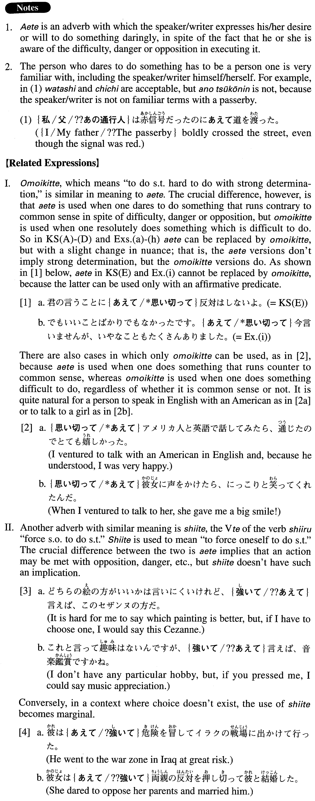

←
DoJG
→
あえて
(A. 3)
Example sentences
(ksa).
部長は
あえて
社長に反対意見を述べた。
The department head boldly expressed his opposing view directly to the company president.
(ksb).
私は
あえて
大がかりな研究計画を立てたいと思う。
I would like to take on a large-scale research proposal.
(ksc).
あえて
先生の理論に異議を唱えてみようと思う。
I think I will try to oppose my professor's theory.
(ksd).
あえて
言えばあなたの考えは机上の空論だ。
If I dare to say so, your idea is an unrealistic, ivory tower theory.
(kse).
君の言うことに
あえて
反対はしないよ。
I don't dare oppose what you're saying.
(a).
アメリカでは黙っていると損をするので、私は日本人として
あえて
自己主張をすることにしている。
In the U.S., if I keep silent I lose out, so as a Japanese, I'm making a point of asserting myself.
(b).
委員会の賛同を得るのは難しいとは知りつつも、
あえて
新機軸の計画を提案した。
Although I knew that it was hard to get approval from the committee, I dared to propose a brand new plan.
(c).
彼の両親が
あえて
住居を変えたのは彼の教育を考えた上であった。
It was after his parents thought about his education that they made the bold move to change their residence.
(d).
悪いとは思いつつも、
あえて
先輩の非をとがめたら、やっぱりそれ以後、その先輩は私と口をきかなくなった。
While I knew I shouldn't have done so, I ventured to criticize my senior partner's wrongdoings. And, sure enough, he's stopped talking to me since.
(e).
私は
あえて
人とは違った道を進みたいと思っている。
I'm thinking of daring to follow a path different from others.
(f).
時代の流れに
あえて
抗おうとしたが、徒労に終わった。
I dared to resist the flow of the times, but it was all in vain.
(g).
あの男は能力がないけれど、
あえて
長所を拾えば、人のよさだろう。
That man has no talent, but if I force myself to single out his strong point, it would be his fine personality.
(h).
あえて
日本の政治を一言で批判すろと、派閥の行動ということになるだろう。
If I ventured to find fault with current Japanese politics, it would be to criticize the behaviour of factions.
(i).
でもいいことばかりでもなかったです。
あえて
今言いませんが、いやなことも沢山ありました。
Not everything went well. I won't venture to say now what, but there were many unpleasant things.
Formation
あえて
Verb
あえて
反対する
Someone dares to disagree
